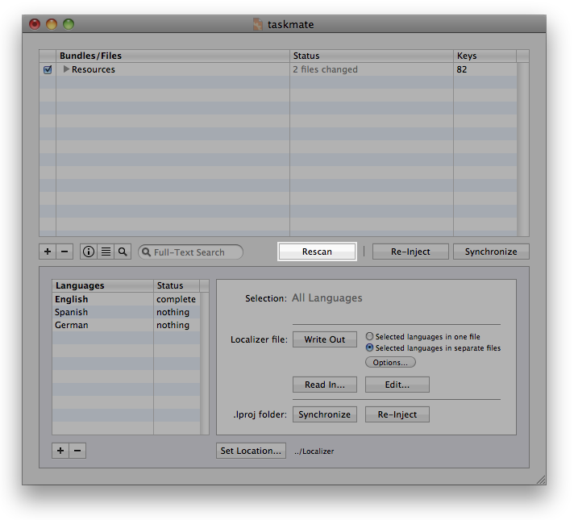

Sometimes it is inevitable to update an application that is currently being localized. The Localization Manager simplifies this process for developers and translators alike.
If you do not have any updates to be incorporated into the localization, please proceed to section Finishing a Project.
When you have created the Localization Manager Project from an Xcode project, all you need to do to update the Localization Manager Project once your updated files are ready is to select the files to be updated in the file list of the Localization Manager window and hit Rescan in the Localization Manager main window.
If you have created a Localization Manager Project using From Empty... you will need to copy the updated files to the resources folder used by the Localization Manager first before hitting the Rescan button.

You can simply rescan all files without having to select all files manually. Just press Shift before clicking Rescan. The button will change to Rescan all.
If you want to rescan files although they have not changed with regards to text content, you can press and hold the Option key (Alt) before clicking Rescan. The button will change to Force Rescan.
You can check which strings have been updated in the individual files by double clicking on the desired file in the file list to open the Contents window. All updated strings will be marked with an U () in the Status (S) column. You can also manually mark individual strings as updated by ticking the check box in the Updated (U) column.
The updated status will also be visible in the Localizer file once you recreate this file from the Localization Manager.
Note:
Be aware that the existing localization of updated strings will remain the same. The translator will need to check updated strings in the Localizer for any required adaptions of the localization.
Please check the Localizer Help for instructions on how to work with updated files in the Localizer.
Updating the Localizer files
After having updated the resource files in the Localization Manager, you will need to create the Localizer files again.
Useful hint:
Before issuing the new Localizer files to your translators, you should ask them to deliver their partially translated Localizer files and import the progress into your Localization Manager Project. See Finishing a Project on how to import translated Localizer files into your Localization Manager Project.
Are you looking for a certain topic? Then take a look at the topics list.
Next chapter: Finishing a Localization Project